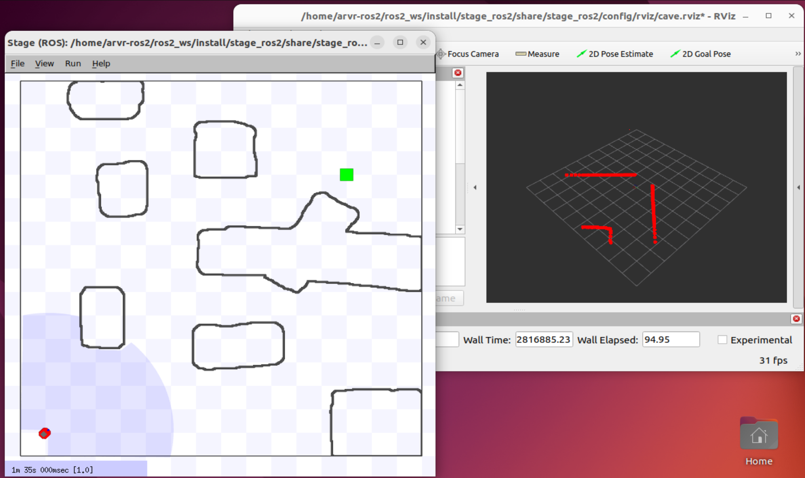

Table of Contents
Overview
Welcome to the EFAC Robotics Labs. This course covers mobile robotics fundamentals using ROS2 (Robot Operating System 2). You will learn to:
- Set up and configure ROS2 development environments
- Control simulated and real mobile robots
- Implement reactive behaviors and navigation
- Work with computer vision and object tracking
- Process 3D point cloud data
Useful Resources
Prepare Software on Your Computer
Choose one of the following methods to set up your ROS2 development environment:
Native ROS2 installation using Pixi and RoboStack. Best for Linux and macOS.
First install Pixi:
In a terminal window, run:
curl -fsSL https://pixi.sh/install.sh | shClose and reopen the terminal window, or run source ~/.bashrc (or the rc of your shell of choice).
In a PowerShell window, run:
powershell -ExecutionPolicy Bypass -c "irm -useb https://pixi.sh/install.ps1 | iex"Close and reopen the PowerShell window.
Then create a Pixi workspace:
mkdir pixiws && cd pixiws
pixi init -c robostack-humble -c conda-forge
pixi add ros-humble-desktop ros-humble-teleop-twist-keyboardActivate the environment and verify:
pixi shell
ros2 pkg list | grep teleoppixi shell from your workspace directory before using ROS2 commands.
Use Pixi to manage a Docker-based ROS2 environment. Best for Windows users or when native RoboStack isn't available.
1. Install Pixi
curl -fsSL https://pixi.sh/install.sh | shClose and reopen the terminal, or run source ~/.bashrc.
powershell -ExecutionPolicy Bypass -c "irm -useb https://pixi.sh/install.ps1 | iex"Close and reopen PowerShell.
2. Install Docker
- Windows: Install Docker Desktop
- Linux: Follow the Docker Engine guide
- macOS: Install Docker Desktop
3. Create Pixi Workspace with Docker Tasks
mkdir pixiws && cd pixiws
pixi initAdd Docker tasks to pixi.toml:
[tasks]
pull = "docker pull laurentiupopa/ros2-efac:ros2"
start = "docker start humble || docker run -dit --name humble --privileged --network=host laurentiupopa/ros2-efac:ros2"
shell = { cmd = "docker exec -it humble bash", depends-on = ["start"] }
stop = "docker stop humble"4. Use the Workspace
pixi run pull
pixi run shellInside the container:
source /opt/ros/humble/setup.bash
ros2 run demo_nodes_cpp talkerpixi run shell to enter the container. The container persists between sessions.
Use a pre-configured Ubuntu 22.04 VM with ROS2 Humble.
1. Download
- Install Oracle VirtualBox
- Download the .ova image file
2. Import the VM
- Open VirtualBox → File → Import Appliance
- Select the
.ovafile - Set 2 CPUs and 4096MB RAM
- Click Finish
3. Login Credentials
| Username: | arvr-ros2 |
| Password: | arvr |
Verify ROS2 Installation
Test that ROS2 is working by running the talker/listener demo in two terminals:
cd ~/pixiws && pixi shell
ros2 run demo_nodes_cpp talkercd ~/pixiws && pixi shell
ros2 run demo_nodes_cpp listenercd ~/pixiws && pixi run shell
source /opt/ros/humble/setup.bash
ros2 run demo_nodes_cpp talkerdocker exec -it humble bash
source /opt/ros/humble/setup.bash
ros2 run demo_nodes_cpp listenerVerify messages are exchanged, then press Ctrl+C to stop.
Lab 1: Introduction to Tools and Frameworks
Objectives
- Familiarize yourself with development tools (Git, CMake, Linux)
- Complete the ROS2 Beginner Tutorials
- Understand ROS2 core concepts: nodes, topics, services, actions
Tasks
1. Environment Setup
Complete the Setup section above.
2. Complete ROS2 Tutorials
Work through the Beginner CLI Tools:
- Configuring environment
- Using turtlesim and rqt
- Understanding nodes, topics, services, parameters, and actions
3. Explore ROS2 Tools
ros2 node list
ros2 topic list
ros2 topic info /chatter
ros2 topic echo /chatterLab 2: Mobile Robot Navigation
Objectives
- Control a simulated robot using ROS2
- Create custom control strategies
- Test code in simulation and on real robots
Tasks
1. Launch the Stage Simulator
cd ~/ros_ws
source install/setup.bash
ros2 launch stage_ros2 demo.launch.py world:=cave
2. Teleoperate the Robot
In a new terminal:
ros2 run teleop_twist_keyboard teleop_twist_keyboard3. Create a Custom Package
cd ~/ros_ws/src
ros2 pkg create --build-type ament_python wander \
--dependencies rclpy geometry_msgs sensor_msgs
cd ~/ros_ws
colcon build --packages-select wander
source install/setup.bash4. Implement Forward Movement
Create wander/wander/forward_move.py:
import rclpy
from rclpy.node import Node
from geometry_msgs.msg import Twist
class ForwardNode(Node):
def __init__(self):
super().__init__('forward_node')
self.publisher_ = self.create_publisher(Twist, 'cmd_vel', 10)
self.timer = self.create_timer(0.1, self.publish_velocity)
def publish_velocity(self):
msg = Twist()
msg.linear.x = 0.5
self.publisher_.publish(msg)
def main(args=None):
rclpy.init(args=args)
rclpy.spin(ForwardNode())
rclpy.shutdown()
if __name__ == '__main__':
main()Update setup.py:
entry_points={
'console_scripts': [
'forward_move = wander.forward_move:main',
],
},Build and run:
cd ~/ros_ws
colcon build --packages-select wander
source install/setup.bash
ros2 run wander forward_move5. Add Obstacle Avoidance
Create wander/wander/avoid_node.py:
import rclpy
from rclpy.node import Node
from geometry_msgs.msg import Twist
from sensor_msgs.msg import LaserScan
class AvoidNode(Node):
def __init__(self):
super().__init__('avoid_node')
self.publisher_ = self.create_publisher(Twist, 'cmd_vel', 10)
self.create_subscription(LaserScan, 'base_scan', self.scan_callback, 10)
def scan_callback(self, msg):
front_dist = msg.ranges[len(msg.ranges)//2]
cmd = Twist()
if front_dist < 0.5:
cmd.angular.z = 0.5
else:
cmd.linear.x = 0.3
self.publisher_.publish(cmd)
def main(args=None):
rclpy.init(args=args)
rclpy.spin(AvoidNode())
rclpy.shutdown()
if __name__ == '__main__':
main()Lab 3: Object Tracking with Computer Vision
Objectives
- Track visual tags using drone camera feed
- Implement Kalman filtering for smooth tracking
- Process ROS2 bag files for testing
Tasks
1. Setup the Package
cd ~/pixiws
pixi add ros-humble-cv-bridge ros-humble-image-transport
pixi shell
mkdir -p src && cd src
git clone https://github.com/laurent-19/tagfollower_ros2.git
cd ..
colcon build --packages-select tagfollower_ros2
source install/setup.bashdocker exec -it humble bash
cd ~/ros_ws/src
git clone https://github.com/laurent-19/tagfollower_ros2.git
cd ~/ros_ws
colcon build --packages-select tagfollower_ros2
source install/setup.bash2. Download Test Data
3. Run the Tag Follower
ros2 run tagfollower_ros2 tagfollower_noderos2 bag play bags24. Convert ROS1 Bags (if needed)
pip3 install rosbags
rosbags-convert --src ros1_bag.bag --dst ros2_bag_dirLab 4: Point Cloud Processing
Objectives
- Understand 3D point cloud data structures
- Process point clouds using PCL
- Implement filtering and segmentation
Setup
pixi add ros-humble-pcl-ros ros-humble-pcl-conversionssudo apt install ros-humble-pcl-ros ros-humble-pcl-conversionsTasks
1. Create Point Cloud Package
cd ~/ros_ws/src
ros2 pkg create --build-type ament_cmake pcl_processing \
--dependencies rclcpp sensor_msgs pcl_conversions2. Subscribe to Point Cloud Data
Create src/pcl_node.cpp:
#include <rclcpp/rclcpp.hpp>
#include <sensor_msgs/msg/point_cloud2.hpp>
#include <pcl_conversions/pcl_conversions.h>
#include <pcl/point_cloud.h>
#include <pcl/point_types.h>
class PCLNode : public rclcpp::Node {
public:
PCLNode() : Node("pcl_node") {
sub_ = create_subscription<sensor_msgs::msg::PointCloud2>(
"/camera/depth/points", 10,
[this](sensor_msgs::msg::PointCloud2::SharedPtr msg) {
pcl::PointCloud<pcl::PointXYZ> cloud;
pcl::fromROSMsg(*msg, cloud);
RCLCPP_INFO(get_logger(), "Points: %zu", cloud.size());
});
}
private:
rclcpp::Subscription<sensor_msgs::msg::PointCloud2>::SharedPtr sub_;
};
int main(int argc, char** argv) {
rclcpp::init(argc, argv);
rclcpp::spin(std::make_shared<PCLNode>());
rclcpp::shutdown();
}3. Voxel Grid Filtering
#include <pcl/filters/voxel_grid.h>
pcl::VoxelGrid<pcl::PointXYZ> vg;
vg.setInputCloud(cloud);
vg.setLeafSize(0.01f, 0.01f, 0.01f);
vg.filter(*filtered);4. Plane Segmentation
#include <pcl/segmentation/sac_segmentation.h>
pcl::SACSegmentation<pcl::PointXYZ> seg;
seg.setModelType(pcl::SACMODEL_PLANE);
seg.setMethodType(pcl::SAC_RANSAC);
seg.setDistanceThreshold(0.01);
seg.setInputCloud(cloud);
seg.segment(*inliers, *coefficients);5. Visualize in RViz
ros2 run rviz2 rviz2